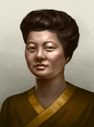

| 北美洲 |
| 南美洲 |
| 大洋洲 |
| Americas |
|
| 大洋洲 |
|
原页面：Releasable countries/Oceania
这是位于大洋洲的所有可释放国家的列表。如果启用「大洋洲去殖民化」自定义游戏规则，除其中一个之外，这些国家在游戏开局时也都会被释放。
| 国家 | Tag | 首都 | 意识形态 | 核心位于 | 备注 | 大洋洲去殖民化 |
|---|---|---|---|---|---|---|
| BOU | Buka | 与巴布亚新几内亚和所罗门群岛共享其核心 |
||||
| HAW | Honolulu | |||||
| GUM | Hagatna | |||||
| FIJ | Suva | 又称斐济。需要「去殖民化」才能由英国释放。如果完成「亚洲自治」则以 |
||||
| FSM | Truk | |||||
| PLU | Koror | |||||
| PNG | 莫尔兹比港 | 与布干维尔共享一个核心 |
||||
| RAP | 汉加罗阿 | 又称复活节岛。需要「反帝国主义十字军」或「意志统一」才能由智利释放。 |
||||
| SAM | Apia | |||||
| SOL | Guadalcanal | 与布干维尔共享一个核心 |
||||
| TAH | 帕皮提 | |||||
| VAN | 维拉港 | 在「亚洲去殖民化」游戏规则下也会被释放。 |
布干维尔共和国 以民主主义开局，不举行选举。
以民主主义开局，不举行选举。
| 政党 | 意识形态 | 支持率 | 党派领袖 | 国家名称 | 是否执政？ |
|---|---|---|---|---|---|
| 民主主义 | 50% | 通用 | 布干维尔共和国 | 是 | |
| 共产主义 | 15% | 通用 | 布干维尔革命社会主义共和国 | No | |
| 法西斯主义 | 0% | 通用 | 布干维尔美拉尼西亚国 | No | |
| 中立主义 | 35% | 通用 | 北所罗门共和国 | No |
| 州 | 城市 | 地形（省份数） | 区域 | ||
|---|---|---|---|---|---|
| Bougainville | 布卡 布因 | 2 1 |
小岛 | 60,000 |
布干维尔共和国 可以成立波利尼西亚
可以成立波利尼西亚
夏威夷王国 以中立主义开局，不举行选举。
以中立主义开局，不举行选举。
| 政党 | 意识形态 | 支持率 | 党派领袖 | 国家名称 | 是否执政？ |
|---|---|---|---|---|---|
| 夏威夷民主党（民主党人） | 38% | 约瑟夫·波因德克斯特 | 夏威夷共和国 | No | |
| 夏威夷共产党（CPH） | 6% | 查尔斯·藤本 | 大奥哈纳联邦 | No | |
| 夏威夷帝国联盟（HIL） | 6% | 通用 | 夏威夷帝国 | No | |
| 卡美哈梅哈皇家骑士团 | 50% | 戴维·卡拉卡瓦·卡瓦纳纳科阿 | 夏威夷王国 | 是 |
| 意识形态 | 肖像 | 名称 | 党派 | 特质 | 效果 | 可用 |
|---|---|---|---|---|---|---|
自由主义 |
约瑟夫·波因德克斯特 | 夏威夷民主党 | – | – | 起始领袖 | |
马克思主义 |

|
查尔斯·藤本 | 夏威夷共产党 | – | – | 起始领袖 |
Despotism |

|
戴维·卡拉卡瓦·卡瓦纳纳科阿 | 卡美哈梅哈皇家骑士团 | – | – | 起始领袖 |
| 州 | 城市 | 地形（省份数） | 区域 | ||
|---|---|---|---|---|---|
| 夏威夷 | 希洛 檀香山 | 3 15 |
发达乡村区 | 368,336 | |
| 约翰斯顿环礁 | – | – | 微型岛屿 | 100 | |
| 莱恩群岛 | – | – | 小岛 | 5,367 | |
| 中途岛 | Midway | 1 | 微型岛屿 | 2,159 | |
| 菲尼克斯岛 | – | – | 微型岛屿 | 24 |
夏威夷王国 可以成立波利尼西亚
可以成立波利尼西亚
在大洋洲殖民状况 - 波利尼西亚帝国中， 夏威夷王国开局为独立且统一的波利尼西亚。
夏威夷王国开局为独立且统一的波利尼西亚。
马里亚纳联邦 开局时为民主主义，每 4 年举行一次选举。下一次选举在 1940 年 1 月。
开局时为民主主义，每 4 年举行一次选举。下一次选举在 1940 年 1 月。
| 政党 | 意识形态 | 支持率 | 党派领袖 | 国家名称 | 是否执政？ |
|---|---|---|---|---|---|
| 马里亚纳共和党（MRP） | 50% | 通用 | 马里亚纳联邦 | 是 | |
| 马里亚纳列宁主义党（MLP） | 36% | 通用 | 马里亚纳联合公社 | No | |
| 马里亚纳独立团体（MIG） | 10% | 通用 | 单一岛屿国 | No | |
| 中立主义 | 4% | 通用 | 马里亚纳群岛 | No |
| 州 | 城市 | 地形（省份数） | 区域 | ||
|---|---|---|---|---|---|
| Guam | Hagatna | 1 | 小岛 | 75,153 | |
| 塞班 | 塞班 | 1 | 小岛 | 21,657 | |
| 威克岛 | Wake | 1 | 微型岛屿 | 150 |
马里亚纳联邦 可以成立波利尼西亚
可以成立波利尼西亚
美拉尼西亚联邦 开局时为民主主义，每 4 年举行一次选举。下一次选举在 1940 年 1 月。
开局时为民主主义，每 4 年举行一次选举。下一次选举在 1940 年 1 月。
| 政党 | 意识形态 | 支持率 | 党派领袖 | 国家名称 | 是否执政？ |
|---|---|---|---|---|---|
| 民主主义 | 50% | 通用 | 美拉尼西亚联邦 | 是 | |
| 共产主义 | 6% | 通用 | 太平洋工人国 | No | |
| 法西斯主义 | 6% | 通用 | 海洋帝国 | No | |
| 中立主义 | 38% | 通用 | Fiji | No |
| 州 | 城市 | 地形（省份数） | 区域 | ||
|---|---|---|---|---|---|
| 埃利斯群岛 | – | – | 小岛 | 493 | |
| Fiji | 苏瓦 苏瓦 | 1 0 |
小岛 | 180,000 | |
| 吉尔伯特群岛 | Tarawa | 1 | 小岛 | 1,035 | |
| 瑙鲁 | 瑙鲁 | 1 | 微型岛屿 | 5,785 |
美拉尼西亚联邦 可以成立波利尼西亚
可以成立波利尼西亚
密克罗尼西亚联邦 开局时为民主主义，每 4 年举行一次选举。下一次选举在 1940 年 1 月。
开局时为民主主义，每 4 年举行一次选举。下一次选举在 1940 年 1 月。
| 政党 | 意识形态 | 支持率 | 党派领袖 | 国家名称 | 是否执政？ |
|---|---|---|---|---|---|
| 密克罗尼西亚联邦民主联盟（FSMDA） | 50% | 通用 | 密克罗尼西亚联邦 | 是 | |
| 波纳佩共产主义联盟（PCU） | 10% | 通用 | 大伯纳佩联盟国 | No | |
| 绍德勒复辟党（SRP） | 36% | 通用 | 第二绍德勒王朝帝国 | No | |
| 中立主义 | 4% | 通用 | Micronesia | No |
| 州 | 城市 | 地形（省份数） | 区域 | ||
|---|---|---|---|---|---|
| 加罗林群岛 | 特鲁克 雅浦 | 5 1 |
小岛 | 42,357 | |
| 马绍尔群岛 | 埃内韦塔克 夸贾林 | 1 3 |
小岛 | 52,517 | |
| 帕劳 | 科罗尔 恩加拉尔德 | 2 1 |
小岛 | 12,100 |
密克罗尼西亚联邦 可以成立波利尼西亚
可以成立波利尼西亚
帕劳共和国 开局时为民主主义，每 4 年举行一次选举。下一次选举在 1940 年 1 月。
开局时为民主主义，每 4 年举行一次选举。下一次选举在 1940 年 1 月。
| 政党 | 意识形态 | 支持率 | 党派领袖 | 国家名称 | 是否执政？ |
|---|---|---|---|---|---|
| 民主主义 | 80% | 通用 | 帕劳共和国 | 是 | |
| 共产主义 | 5% | 通用 | 帕劳士兵委员会 | No | |
| 法西斯主义 | 5% | 通用 | 南海帝国 | No | |
| 中立主义 | 10% | 通用 | 帕劳 | No |
| 州 | 城市 | 地形（省份数） | 区域 | ||
|---|---|---|---|---|---|
| 帕劳 | 科罗尔 恩加拉尔德 | 2 1 |
小岛 | 12,100 |
帕劳共和国 可以成立波利尼西亚
可以成立波利尼西亚
 巴布亚新几内亚 以民主主义
巴布亚新几内亚 以民主主义 开局，每 4 年举行一次选举。下一次选举在 1940 年 1 月。
开局，每 4 年举行一次选举。下一次选举在 1940 年 1 月。
| 政党 | 意识形态 | 支持率 | 党派领袖 | 国家名称 | 是否执政？ |
|---|---|---|---|---|---|
| 民主主义 | 75% | 通用 | 巴布亚新几内亚 | 是 | |
| 共产主义 | 1% | 通用 | 巴布亚联合公社 | No | |
| 法西斯主义 | 1% | 通用 | Papua | No | |
| 中立主义 | 23% | 通用 | 巴布亚人民联邦 | No |
| 州 | 城市 | 地形（省份数） | 区域 | ||
|---|---|---|---|---|---|
| 俾斯麦 | Rabaul | 5 | 乡村区 | 345,640 | |
| 威廉皇帝领地 | 莱城 马当 韦瓦克 | 3 2 1 |
乡村区 | 359,000 | |
| Papua | 阿洛陶 达鲁 莫尔兹比港 | 1 1 3 |
乡村区 | 718,000 |
拉帕努伊王国 以中立主义开局，不举行选举。
以中立主义开局，不举行选举。
| 政党 | 意识形态 | 支持率 | 党派领袖 | 国家名称 | 是否执政？ |
|---|---|---|---|---|---|
| 民主主义 | 20% | 胡安·特帕诺·拉诺·阿·维里·阿莫 | 拉帕努伊共和国 | No | |
| 共产主义 | 10% | 通用 | 拉帕努伊水手公社 | No | |
| 法西斯主义 | 0% | 通用 | 东波利尼西亚帝国 | No | |
| 中立主义 | 70% | 瓦伦蒂诺·里罗罗科·图基的摄政委员会 | 拉帕努伊王国 | 是 |
| 意识形态 | 肖像 | 名称 | 党派 | 特质 | 效果 | 可用 |
|---|---|---|---|---|---|---|
保守主义 |
胡安·特帕诺·拉诺·阿·维里·阿莫 | 民主主义 | 文化守护者与学者 |
|
起始领袖 | |
Despotism |
瓦伦蒂诺·里罗罗科·图基的摄政委员会 | 中立主义 | 拉帕努伊阿里基 |
|
起始领袖 |
| 肖像 | 名称 | 特质 | 效果 | 要求 | 花费（） |
|---|---|---|---|---|---|
| 胡安·特帕诺·拉诺·阿·维里·阿莫 | 教育改革者 |
|
– | 150 |
| 州 | 城市 | 地形（省份数） | 区域 | ||
|---|---|---|---|---|---|
| 复活节岛 | 汉加罗阿 | 1 | 小岛 | 6,600 |
拉帕努伊王国 可以成立波利尼西亚
可以成立波利尼西亚
萨摩亚独立国 开局时为民主主义，每 4 年举行一次选举。下一次选举在 1940 年 1 月。
开局时为民主主义，每 4 年举行一次选举。下一次选举在 1940 年 1 月。
| 政党 | 意识形态 | 支持率 | 党派领袖 | 国家名称 | 是否执政？ |
|---|---|---|---|---|---|
| 民主主义 | 50% | 通用 | 萨摩亚独立国 | 是 | |
| 共产主义 | 6% | 通用 | 萨摩亚人民共和国 | No | |
| 法西斯主义 | 6% | 通用 | 萨摩亚玛纳主义国 | No | |
| 中立主义 | 38% | 通用 | 萨摩亚 | No |
| 州 | 城市 | 地形（省份数） | 区域 | ||
|---|---|---|---|---|---|
| 萨摩亚 | Apia | 1 | 小岛 | 123,214 |
萨摩亚独立国 可以成立波利尼西亚
可以成立波利尼西亚
所罗门群岛 开局时为民主主义，每 4 年举行一次选举。下一次选举在 1940 年 1 月。
开局时为民主主义，每 4 年举行一次选举。下一次选举在 1940 年 1 月。
| 政党 | 意识形态 | 支持率 | 党派领袖 | 国家名称 | 是否执政？ |
|---|---|---|---|---|---|
| 所罗门群岛自由党（SILP） | 50% | 通用 | 所罗门群岛 | 是 | |
| 人民联盟党（PAP） | 6% | 通用 | 所罗门公社 | No | |
| 所罗门基督教党（SCP） | 6% | 通用 | 所罗门帝国 | No | |
| 所罗门中立党（SNP） | 38% | 通用 | 所罗门群岛 | No |
| 州 | 城市 | 地形（省份数） | 区域 | ||
|---|---|---|---|---|---|
| 所罗门群岛 | 布因 瓜达尔卡纳尔 | 1 3 |
小岛 | 150,000 |
所罗门群岛 可以成立波利尼西亚
可以成立波利尼西亚
 Tahiti 以中立主义
Tahiti 以中立主义 开局，不举行选举。
开局，不举行选举。
| 政党 | 意识形态 | 支持率 | 党派领袖 | 国家名称 | 是否执政？ |
|---|---|---|---|---|---|
| 民主联盟（UFD） | 38% | 通用 | 法属波利尼西亚 | No | |
| 波利尼西亚社会议会（PSA） | 6% | 通用 | 塔希提公社 | No | |
| 普瓦纳·阿·奥帕（PaO） | 6% | 通用 | 塔希提国民议会 | No | |
| 迈劳家族 | 50% | 塔希提的特里伊-努伊-奥-塔希提·阿·波马雷 | Tahiti | 是 |
| 意识形态 | 肖像 | 名称 | 党派 | 特质 | 效果 | 可用 |
|---|---|---|---|---|---|---|
Despotism |
 |
塔希提的特里伊-努伊-奥-塔希提·阿·波马雷 | 迈劳家族 | – | – | 起始领袖 |
| 州 | 城市 | 地形（省份数） | 区域 | ||
|---|---|---|---|---|---|
| Nendo | – | – | 微型岛屿 | 5,167 | |
| 新喀里多尼亚 | 努美阿 维拉港 | 1 1 |
小岛 | 51,876 | |
| Tahiti | 帕皮提 | 1 | 小岛 | 105,786 |
 Tahiti可以成立波利尼西亚
Tahiti可以成立波利尼西亚
瓦努阿图共和国 以民主主义开局，不举行选举。
以民主主义开局，不举行选举。
| 政党 | 意识形态 | 支持率 | 党派领袖 | 国家名称 | 是否执政？ |
|---|---|---|---|---|---|
| 民主主义 | 50% | 通用 | 瓦努阿图共和国 | 是 | |
| 共产主义 | 15% | 通用 | 瓦努阿图人民临时政府 | No | |
| 法西斯主义 | 0% | 通用 | 尼-瓦努阿图帝国 | No | |
| 中立主义 | 35% | 通用 | 维梅拉纳崇高共和国 | No |
| 州 | 城市 | 地形（省份数） | 区域 | ||
|---|---|---|---|---|---|
| Vanuatu | 维拉港 | 1 | 小岛 | 21,876 |
瓦努阿图共和国 可以成立波利尼西亚
可以成立波利尼西亚
| 北美洲 |
| 南美洲 |
| 大洋洲 |
| Americas |
|
| 大洋洲 |
|